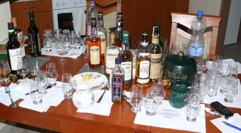

Page 7 of 60
Re: What are you having yourself?

Posted:
Mon May 24, 2010 12:04 amby IainB
varizoltan wrote:i was in The Dying Cow last night and had a few Black Bush
You lucky man! Let me know next time you're going.
Re: What are you having yourself?
Posted:
Mon May 24, 2010 10:34 amby varizoltan
IainB wrote:varizoltan wrote:i was in The Dying Cow last night and had a few Black Bush
You lucky man! Let me know next time you're going.
i did phone you, but no answer...
we had a great time...
Re: What are you having yourself?
Posted:
Mon May 24, 2010 10:49 amby IainB
varizoltan wrote:IainB wrote:varizoltan wrote:i was in The Dying Cow last night and had a few Black Bush
You lucky man! Let me know next time you're going.
i did phone you, but no answer...
we had a great time...
Thanks, I appreciate the call. Wasn't out at the weekend anyway - trying to be good!
Re: What are you having yourself?
Posted:
Mon May 31, 2010 7:08 pmby TheAngel'sShare
Its probably been mentioned before, but I must say that Writer's Tears is very nice whiskey. For €38 per bottle at Celtic Whiskey, it seems good value for what you get. Better neat, or with one cube of ice? Can't make up my mind.
Re: What are you having yourself?
Posted:
Mon May 31, 2010 7:35 pmby TheWhiskeyBro
Yes it's from the Irishman stable, at €38 a bit pricey for what your getting, but overall this blend has been well received
Re: What are you having yourself?
Posted:
Mon May 31, 2010 9:27 pmby varizoltan
just having some left overs from last nights Hungarian Committee Meeting here at home
s h i t like Dungourney 1964, Midleton VR 1967, 1985, 1995, 2004, 2005, Ardbeg 30, Laphroaig 30 and of course my new house whiskey Tyrconnell 17.5, etc, etc......
Re: What are you having yourself?
Posted:
Mon May 31, 2010 9:56 pmby IrishWhiskeyChaser
varizoltan wrote:just having some left overs from last nights Hungarian Committee Meeting here at home
s h i t like Dungourney 1964, Midleton VR 1967, 1985, 1995, 2004, 2005, Ardbeg 30, Laphroaig 30 and of course my new house whiskey Tyrconnell 17.5, etc, etc......
Good to see you slumming it

Can you tell me what the Midleton VR 1967 is? ... or is it the
Rare 1967 bottled for the Potstill.com you mean?
Anyway Glad I didn't make it over so as I'd hate to be drinking any of that dish water


Re: What are you having yourself?
Posted:
Mon May 31, 2010 10:11 pmby varizoltan
IrishWhiskeyChaser wrote:varizoltan wrote:just having some left overs from last nights Hungarian Committee Meeting here at home
s h i t like Dungourney 1964, Midleton VR 1967, 1985, 1995, 2004, 2005, Ardbeg 30, Laphroaig 30 and of course my new house whiskey Tyrconnell 17.5, etc, etc......
Good to see you slumming it
Can you tell me what the Midleton VR 1967 is? ... or is it the
Rare 1967 bottled for the Potstill.com you mean?
Anyway Glad I didn't make it over so as I'd hate to be drinking any of that dish water
that is the one, 35 years old, it is bad all right so as the rest

Re: What are you having yourself?
Posted:
Mon May 31, 2010 11:46 pmby TheWhiskeyBro
Hi Z,
hope you had a good one, if you could arrange a small sample of the 1967-2002 Potstill.de Midleton bottling so I can do some tasting notes for the forum it would be much appreciated,
Cheers
TWB
Re: What are you having yourself?
Posted:
Wed Jun 02, 2010 12:06 amby IrishWhiskeyChaser
A simple Laphroaig 10yo and the taste buds are tingling but how can I call Laphroaig simple
Washed down by a Schofferhofer weissebier.
I really don't know why this whisky is so good

Some people may think this is brash and over powering which may be true however it reminds of something a scotch whisky drinker said to me once. And that was that Irish is totally over powered by a scotch ... untrue, and maybe it is only me, but for me a Laphroaig does not over power a Jameson 12yo or a Powers Gold and any of the PPS whiskies totally stand on their own.
So morale of the story just because something is smooth and mellow does not mean it is devoid of taste.
Re: What are you having yourself?
Posted:
Sat Jun 05, 2010 12:09 amby varizoltan
ardbeg 30, winner of the night, simply just better than the rest...
Re: What are you having yourself?
Posted:
Sat Jun 05, 2010 2:03 amby PureDrop
Before:

- xP1110031.JPG (44.97 KiB) Viewed 2478 times
After:
- 
- xP1110047.JPG (50.27 KiB) Viewed 2478 times

Re: What are you having yourself?
Posted:
Sat Jun 05, 2010 11:31 amby varizoltan
MichaelS wrote:Before:
xP1110031.JPG
After:
xP1110047.JPG
i know where that happened
Re: What are you having yourself?
Posted:
Sat Jun 05, 2010 9:03 pmby brettie vedder
with only a few nights left in ireland, going to relax tonight with some redbreast 12yo. this is the quintessential irish whiskey for me. if someone asked me how to define irish whiskey...this is what i would let them taste.
saw your previous post about laph 10yo IWC. i couldn't agree with you more. i dont know what it is about that stuff, but it just conjures up all things good for me. the stuff blows my mind even more with each new taste. for me, there really is nothing better than a snowy winters night with a dram of laph 10yo and a turf fire. i sure am going to miss that. i guess ill have to settle for some peat incense, lol
Re: What are you having yourself?
Posted:
Wed Jun 16, 2010 2:27 pmby IainB
I opened on of the Lagavulin 12yo sherry cask bottles last night. Well worth a visit for any laga fan. Very sherried, obviously, very rich but still plenty smoke at that age. Quite different to the other lagavulins, except maybe the 21yo - it's like a younger more heavily sherried version, but not to the point of drowning out the Laga character.
Re: What are you having yourself?
Posted:
Thu Jun 17, 2010 12:39 amby JohnM
Tonight I'm trying a few Bladnoch forum bottlings. A Glen Grant 27, a Caol Ila 29 and a Benriach 23. The Benriach is my favourite of the three. Very nice indeed.
Re: What are you having yourself?
Posted:
Sat Jun 19, 2010 1:46 amby cathach
Bladnoch 19yo single cask strength malt whisky 54%. Lovely stuff even at this strength with lemon and flowery notes. Tart and refreshing on the tongue too.
Dangerously drinkable when watered down.
Re: What are you having yourself?
Posted:
Sun Jun 20, 2010 11:10 pmby jcskinner
Recession drinking - I'm on the Black Bush.
Re: What are you having yourself?
Posted:
Mon Jun 21, 2010 12:39 amby SixCats!
Hi all,
Tonight, NO Liquor! Only Fruit juice. I plan to take a few nights (or more) off from drinking Liquor as I have had a dram (or three) nearly every single night for the last couple of weeks. I don't want to loose control.
Regards,
SixCats!
Re: What are you having yourself?
Posted:
Mon Jun 21, 2010 2:52 amby brettie vedder
took my pops out for lunch with my mom today. had some canadian club, makers mark and blantons original single barrel. not sure of the age on the blantons though but not half bad. tasted loads of burnt charcoal and vanilla. hats off to graeme mcdowell for winning the us open! not the south, but good enough!
Re: What are you having yourself?
Posted:
Mon Jun 21, 2010 9:57 amby IrishWhiskeyChaser
brettie vedder wrote:took my pops out for lunch with my mom today. had some canadian club, makers mark and blantons original single barrel. not sure of the age on the blantons though but not half bad. tasted loads of burnt charcoal and vanilla. hats off to graeme mcdowell for winning the us open! not the south, but good enough!
Hi Brette, what is Canadian Club like ... I noticed it in my local lately so might give it a try. However I've tried Seagrams V.O. and didi not think much of it.
Re: What are you having yourself?
Posted:
Mon Jun 21, 2010 1:08 pmby brettie vedder
IrishWhiskeyChaser wrote:brettie vedder wrote:took my pops out for lunch with my mom today. had some canadian club, makers mark and blantons original single barrel. not sure of the age on the blantons though but not half bad. tasted loads of burnt charcoal and vanilla. hats off to graeme mcdowell for winning the us open! not the south, but good enough!
Hi Brette, what is Canadian Club like ... I noticed it in my local lately so might give it a try. However I've tried Seagrams V.O. and didi not think much of it.
for me its just a nice, light, rye whisky. i love drinking it over ice in the summer for some reason. its nothing that will blow your mind, but in my opinion worth trying. its $12 for 750ml in america, and i think it was around 28 euro for a 700ml bottle in ireland. at that price i would say its not worth it unless your just grabbing a drop in the pub. i am not a big fan of seagram's vo either, but crown royal is pretty nice. these days im getting loads more enjoyment out of bang for your buck drinks though, lol
Re: What are you having yourself?
Posted:
Mon Jun 21, 2010 3:33 pmby IrishWhiskeyChaser
brettie vedder wrote:for me its just a nice, light, rye whisky. i love drinking it over ice in the summer for some reason. its nothing that will blow your mind, but in my opinion worth trying. its $12 for 750ml in america, and i think it was around 28 euro for a 700ml bottle in ireland. at that price i would say its not worth it unless your just grabbing a drop in the pub. i am not a big fan of seagram's vo either, but crown royal is pretty nice. these days im getting loads more enjoyment out of bang for your buck drinks though, lol
Thanks BV
I did not realise it is a Rye WHiskey ... that's good to know ... must give it a go so and in this weather I think I'll be having it over ice too
Re: What are you having yourself?
Posted:
Mon Jun 21, 2010 3:52 pmby jcskinner
Canadians mean something different to Americans when they talk of rye whiskey.
There need not be any rye at all in Canadian whiskey, yet they can still call it rye for some reason.
CC does have a bit of rye in its 'flavouring whiskey' mashbill, but more corn than anything, I believe. That then gets blended with a light 'base' whiskey, a bit like how we dilute PPS with grain whiskey for Irish blends.
Re: What are you having yourself?
Posted:
Mon Jun 21, 2010 4:19 pmby brettie vedder
IrishWhiskeyChaser wrote:brettie vedder wrote:for me its just a nice, light, rye whisky. i love drinking it over ice in the summer for some reason. its nothing that will blow your mind, but in my opinion worth trying. its $12 for 750ml in america, and i think it was around 28 euro for a 700ml bottle in ireland. at that price i would say its not worth it unless your just grabbing a drop in the pub. i am not a big fan of seagram's vo either, but crown royal is pretty nice. these days im getting loads more enjoyment out of bang for your buck drinks though, lol
Thanks BV
I did not realise it is a Rye WHiskey ... that's good to know ... must give it a go so and in this weather I think I'll be having it over ice too
no problem IWC. here is the description of it on their website. i know canada has weird laws regarding their rye whisky.
The one that started the legend! Like all our whiskies 1858 Original is blended before ageing. This allows the subtle flavors of the rye, rye malt, barley and corn to marry perfectly before their long sleep in top quality white oak barrels. The result is a smooth, light, mellow flavor